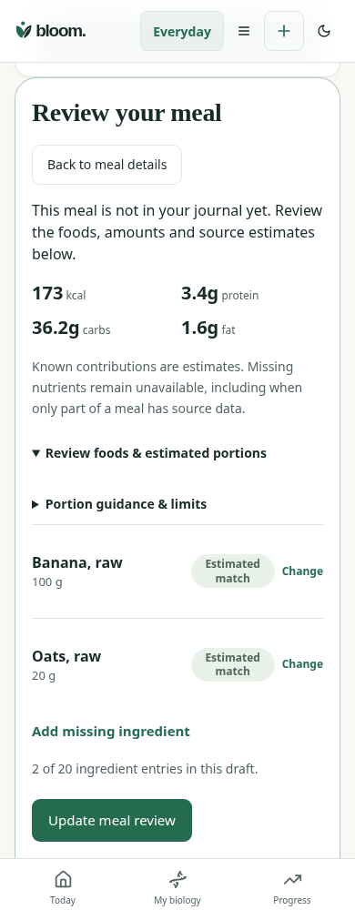
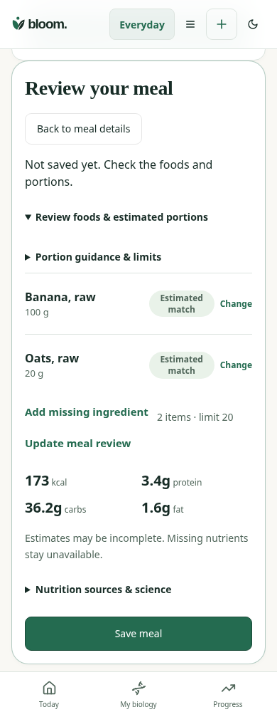

Actual App/HTTP/PostgreSQL, same synthetic banana/oats draft, fixed2026-10-26 clock, same viewport/theme/current app. Before overrides LogMeal.tsx, MealAnalysis.tsx and brand.css from62499d8383f3beabd9ff883551363caa84653328. No historical hosted or independent acceptance claim.
Original screenshots below. Annotated originals retained alongside; their numbered markers identify heading, unsaved status and totals.

